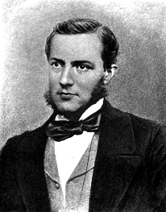
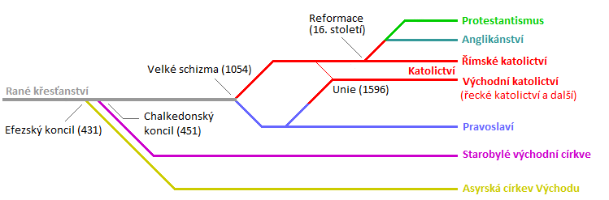

Náboženství
Obecně
Religionistika je věda, která se zabývá studiem náboženství. Jejím předmětem je popis a klasifikace jednotlivých
náboženských skutečností i celých náboženských systémů.
Jedním z problémů religionistiky jako vědy zůstává definice náboženství a s ní spojený problém definice samotné
religionistiky. Věda sama používá různých metod v závislosti na škole, která se jí věnuje; odtud pramení i jisté
rozdíly mezi těmito přístupy v religionistice.
Vznik religionistiky jako samostatného oboru studia
spadá do druhé poloviny 19. století a za jejího zakladatele se považuje Friedrich Max Müller.
Historie
Religionistika mohla vzniknout až když se dostatečně rozvinuly jiné obory, které jí poskytly potřebný materiál.
Za zakladatele religionistiky jako akademické disciplíny jsou považováni Pierre Daniel Chantepie de la Saussaye,
Cornelis Petrus Tiele a především Friedrich Max Müller.
Roku 1867 publikoval Max Müller první díl své čtyřdílné práce Chips from a German Workshop.
Müller v něm volá po založení samostatného oboru, který by se zabýval studiem náboženství. Poprvé se zde také
objevuje termín science of religion – religionistika.

Max Müller (1823–1900)
Křesťanství - obecně
Křesťanství je misijní náboženství, soustředěné kolem života a učení Ježíše z Nazaretu, kterého chápe jako mesiáše
(tj. Krista), spasitele světa a Božího syna. Křesťanství vzniklo z antického judaismu na území Palestiny,
kde Ježíš působil. Toto působení, počátky a základy křesťanství zachycuje Nový zákon, který spolu s židovským
Starým zákonem tvoří bibli, základní posvátnou knihu křesťanství.
Příslušnost ke křesťanství není dána původem nebo narozením, nýbrž křtem a
osobním přijetím určitého vyznání víry a životní praxe. Všichni křesťané věří
v jednoho, nejčastěji trojjediného Boha, vyznávají Ježíše Krista jako Spasitele a Božího syna, uznávají
křest a věří v možnost odpuštění hříchů a spásy. Křesťané chápou život a
smrt Ježíše Krista jako Boží čin, který člověka zachraňuje z duchovní smrti, přináší mu odpuštění a smíření
s Bohem. Křesťané věří, že Ježíš zemřel na kříži, třetího dne byl vzkříšen, 40 dní se ukazoval některým ze
svých stoupenců a poté v těle vstoupil na nebe. Podle bible a víry křesťanů pak byl jeho učedníkům o letnicích
seslán Duch svatý, který ve světě nadále působí. Křesťané očekávají druhý příchod Ježíše Krista jako soudce světa
na konci dějin.
Kristovi následovníci v čele s apoštoly tvořili prvotní církev. Původní křesťanské společenství se brzy rozešlo
do různých míst a postupem času rozdělilo do několika větví, které se dnes zpravidla označují jako církve nebo
denominace. Většina křesťanů patří k jedné ze tří hlavních skupin církví: ke katolické církvi, pravoslavné církvi,
nebo k některé z církví vzešlých z protestantské reformace.

Jako celek je křesťanství nejrozšířenějším světovým náboženstvím s více než 2 miliardami věřících, v oblasti náboženského vyznání silně převažuje na třech kontinentech (v Evropě, Austrálii a Americe). Křesťanství se spolu s dalšími činiteli výrazně podílelo na formování tzv. západní civilizace
Křesťanství - charakteristika
Křesťanství je monoteistické a univerzální náboženství, to znamená že se obrací ke každému člověku vůbec,
a to jako k jednotlivé osobě. Protože příslušnost ke křesťanství není předem dána původem, kulturou a
podobně, musí se vymezovat jinak, zejména přijetím jistého učení, morálky a náboženské praxe.
Křesťanství je také náboženství historické, což znamená, že svůj původ odvozuje od života a působení
určité historické postavy, Ježíše z Nazareta, jehož křesťané vyznávají jako Krista. Tímto svým původem
křesťanství vědomě navazuje na židovské náboženství (judaismus), z něhož kdysi vzešlo a s nímž sdílí mnoho
rysů: vyznává jednoho Boha Stvořitele, přijímá jeho zjevení v Bibli, očekává jeho poslední soud a slaví řadu
podobných svátků. Podobně jako židovství klade důraz na události izraelských i vlastních dějin, v nichž vidí
součást dějin spásy.
Pojem „křesťanství“ (řecky χριστιανισμός christianismos) se poprvé objevuje v listech syrského biskupa Ignáce z
Antiochie († asi 106) a Skutky apoštolů líčí, jak v Antiochii dostali Ježíšovi stoupenci poprvé název „křesťané“
(vlastně „kristovci“, srov. např. německy Christen).
Křesťanství - učení
Navzdory určitým rozdílům mezi jednotlivými církvemi se křesťané v naprosté
většině shodují na následujících bodech: Existuje pouze jeden Bůh (monoteismus),
kterého křesťané chápou jako osobní bytost (teismus). Tento Bůh je všemohoucí, vševědoucí,
všudypřítomný, věčný a neviditelný. Většinou křesťanů je tento jediný Bůh chápán jako trojjediný,
tedy existující ve třech osobách jako Bůh Otec, Syn a Duch svatý, kteří sdílejí jediné božství.
Tento Bůh je stvořitelem světa i člověka. Člověk je stvořen jako bytost Bohu podobná. Ve stvořeném
světě není nic, co by bylo hodné božské úcty. Bůh s lidstvem komunikuje a odhaluje mu svou podstatu
a svůj záměr s člověkem.
Člověk se však narušil svůj vztah s Bohem tím, že se od něj odklonil, poprvé takzvaným prvotním hříchem,
čímž propadl smrti a způsobil předávání dědičného sklonu k hříchu dalším pokolením. Přesto Bůh nepřestal
o člověka pečovat, uzavíral s ním smlouvy (Noe, Abrahám, Mojžíš, David) a sliboval, že jednou pošle lidstvu
vykupitele, který jej z tohoto otroctví hříchu a smrti vyvede. Tímto vykupitelem je Ježíš, v němž se Bůh sám
stal člověkem (vtělení). Ježíš kvůli záchraně člověka zemřel, a tak člověku přinesl odpuštění a vykoupení, a
vysvobodil ho z otroctví hříchu a smrti. Ježíše pak Bůh po třech dnech vzkřísil z mrtvých. Ježíš poté ještě
čtyřicet dní pobýval mezi svými učedníky, až v těle vstoupil na nebe. Následně byl učedníkům seslán Duch svatý,
který ve světě stále působí. Křesťané očekávají druhý příchod Kristův na konci světa, kde je Kristus chápán
jako postava soudce živých i mrtvých. Vyvoleným je slíben věčný život v blaženosti.
Křesťané se scházejí v různých místních společenstvích (farnosti, obce, sbory atd.), patří však zároveň do
jedné církve. I když z různých historických i názorových důvodů je křesťanských církví a konfesí mnoho,
všechny uznávají, že je jim uloženo, aby církev byla jedna (viz též ekumenismus). Nauka o církvi se nazývá
ekleziologie. Postoj jednotlivých církví k druhým, jejich chápaní a vztah k jediné Kristově Církvi jsou různé.
Např. katolická církev samu sebe chápe jako pokračovatelku původní Kristovy církve, která v ní „subsistuje“
(uskutečňuje se). Církve, které nezachovaly apoštolskou posloupnost (jako např. reformované), pak dle ní
nejsou církvemi v pravém slova smyslu. Do společenství patří i ti, kdo již zemřeli a jsou blízko Kristu,
proto se k nim jako ke svatým mnozí křesťané obracejí s prosbou o pomoc a přímluvu. Zvláštní místo mezi nimi
patří podle katolických a pravoslavných církví Ježíšově matce, Panně Marii.
Bible je pro křesťany Písmo svaté, inspirované slovo o Božím jednání se světem v Ježíši Kristu, který je
prvním zdrojem a poslední normou jejich učení i života.
Judaismus - obecně
Judaismus je termín, který označuje (zhruba od 19. století) náboženství židovského národa – Izraele.
Do té doby se v křesťanském prostředí používaly pro víru židů obraty jako „izraelitská víra“
, „židovská víra“ nebo „mojžíšská víra“. Židé sami své
náboženství označovali a označují jako emuna (víra) nebo da'at (náboženství). Moderní termín jahadut
(židovství) se vztahuje spíše na kulturně-národnostně-náboženský celek.
V této souvislosti je třeba rozlišit mezi judaismem jako náboženstvím, a židovstvím jako kulturně-nábožensko-nacionálním
souborem, zahrnujícím historii, jazyk, zemi, liturgii, filozofii, umění, soubor
etických zásad, náboženských praktik apod. Teologie judaismu slouží jako základ mnoha jiných náboženství včetně
dvou nejrozšířenějších, křesťanství a islámu.
Judaismus - v Bibli
Judaismus a jeho dějiny jsou neodmyslitelně spjaty s dějinami Izraele a židovského národa. Judaismus vznikl jako
kmenové náboženství hebrejských kmenů přibližně ve 2. tisíciletí př. n. l. Podle Tóry jsou předky izraelského národa
tři praotcové, Abrahám, Izák a Jákob – tito jsou líčeni jako lidé, kteří věřili v jednoho Boha. Se změnou Jákobova
jména na Izrael (Bůh bojuje), se Bůh Abrahámův, Bůh Izákův a Bůh Jákobův stává Bohem Izraele. Jákob, poslední z
patriarchů, měl 12 synů, z nichž povstalo dvanáct kmenů, které se jednotně nazývaly Izraelem. Po vyjití z
egyptského otroctví jim byl skrze Mojžíše dán Boží zákon – Tóra, což je jeden z momentů, který je považován
za „vznik“ židovského náboženství.
Vědecká teorie je mnohem méně květnatá, než jak je historie předkládaná v Bibli – pro naprostou většinu
údajů obsažených v Tóře neexistuje jediný hmotný pramen, a většina biblických postav je postavena na úroveň
postav mýtických, pro jejichž existenci nemáme žádné důkazy. Navíc Biblí popisovaný nomádský život v sobě
obsahuje anachronismy, které mluví o poměrně pozdním ucelení jednotlivých legend.